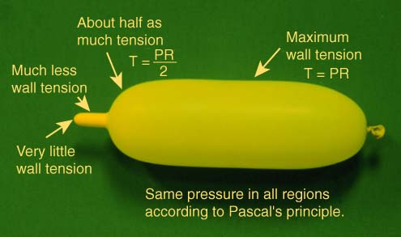
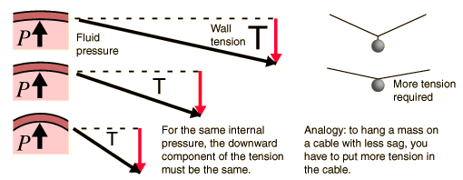

Wall Tension Pascal's principle requires that the pressure is everywhere the same inside the balloon at equilibrium. But examination immediately reveals that there are great differences in wall tension on different parts of the balloon. The variation is described by Laplace's Law.Once you have established the geometry of the balloon, then the tension, pressure and radius have a definite relationship and could be used to measure tension or pressure. That is, if you have a gauge to measure pressure, then you can calculate the wall tension. In the interesting experiment of putting one end of a balloon into liquid nitrogen, you can collapse one end of it by cooling while the other end stays essentially at its previous radius. This can be taken to imply that the pressure is not diminishing significantly since for a given tension, the pressure is related to the radius. |
Index LaPlace's law concepts | ||
|
Go Back |
LaPlace's LawThe larger the vessel radius, the larger the wall tension required to withstand a given internal fluid pressure. For a given vessel radius and internal pressure, a spherical vessel will have half the wall tension of a cylindrical vessel. Why does the wall tension increase with radius? |
Index LaPlace's law concepts Balloon example | ||
|
Go Back |
Why does wall tension increase with radius?If the upward part of the fluid pressure remains the same, then the downward component of the wall tension must remain the same. But if the curvature is less, then the total tension must be greater in order to get that same downward component of tension. |
Index LaPlace's law concepts Balloon example | ||
|
Go Back |